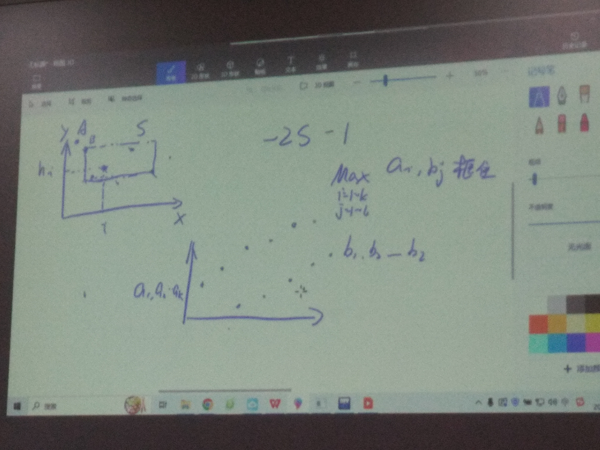
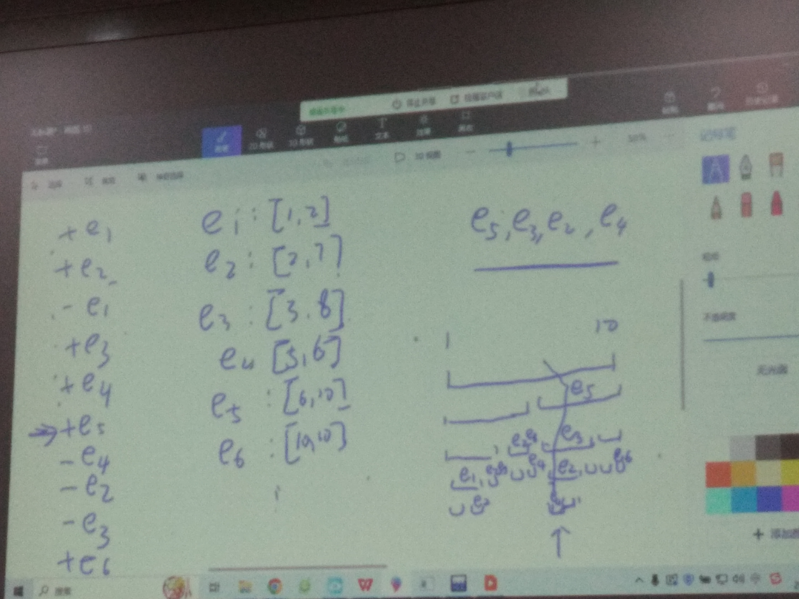
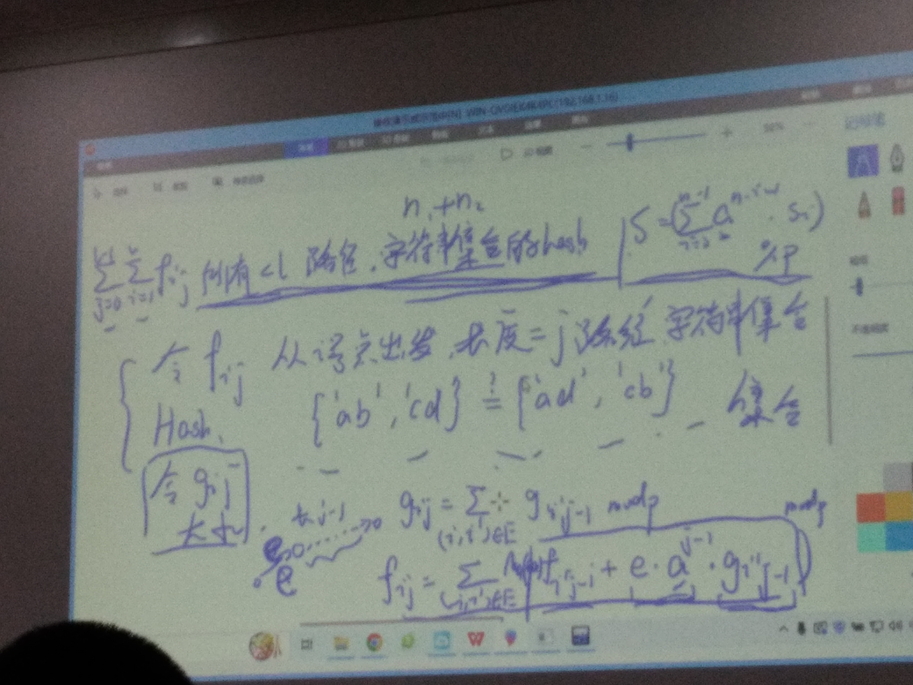

第三天
日常膜拜不放图片了
小提示：
- 因为时间太紧，笔寄中的题目描述可能不全或有错误，请以PPT中的题目为准。
- 题解中 斜体部分 是使用GitHub Copilot生成的，可能有些错误，仅供参考。
小发现：机房里还有一位大佬也反着穿衣服耶（
上午
一、图论
加权路径和
给定一个个点的树，每条边带权值。有次询问，每次询问点到点的路径的权值，一条路径的权值计算方法如下：
假设路径上的边权是，那么路径的权值为。
版本一：强制在线：
版本二：可以离线：
版本三：强制在线，带修改（路径上所有边的权值都加上一个数）：
次小生成树
给定一张个点，条边，每条边权值为的无向图，求次小生成树权值和。
二、二叉堆
- 没啥好考的
- 左偏树应用会多一些
参考资料
例题：优先队列
- 题目描述：
老师现场出的，没记下题目来，自己去ppt里面找补
- 图解：

矩形叠加问题
-
题目描述：
给定一个二维平面上个矩形，对于，求所有满足的整点中被最多矩形覆盖的整点被多少个矩形覆盖。
-
提示：
把二维中的看作时间，看作一个一维序列一个扫描线，从左到右扫过去，看与多少个矩形有交。与一个新矩形相交时，离开矩形时，最后统计一下每个点被覆盖了多少次。
LibreOJ Round #6 花火
图解：

三、线段树分治
连通块个数
- 题目描述：
维护一张无向图次操作，每次加入一条边或删一条边，求每次操作后的连通块个数。
- 图解：
例一：
例二：
四、哈希 Hash
哈希 & 字符串哈希

我记得我应该是会哈希的，为什么给我讲蒙了（
经典应用
给定串次询问，每次询问两个位置的最长公共前缀。
CF 1017 E
给定两个平面中的点集，判断他们的凸包是否旋转、平移同构。
, 坐标范围
CCF 2023 D 括号
-
题目描述：
给定一个有种括号的长度为的括号序列，每种括号分为左右两种，有次操作，每次操作有两种情况：
1、修改一个位置的括号类型（哪一种、左/右）
2、询问一个区间内的括号序列是否合法，合法的定义如下：
- 空串是合法的括号序列
- 如果A和B都是合法的括号序列，那AB也是
- 如果A是合法的括号序列，那么(A)、)A(、[A]、]A[也是（在A左右加一种括号的左右括号）
屑老师说这是他昨天晚上现编的，原题不是括号，是消消乐类的东西
-
小提示：
- 线段树维护连乘
UOJ 同构判定鸭
图解：

线性代数...是什么？我连矩阵都没学啊啊啊啊
还有特征多项式...
五、未讲内容
维护队列 / KMP / AC自动机
下午
换老师了，重新膜拜一下

小剧透：今天下午全是DP
一、动态规划 之 树形DP
{kind=link}
- 求
- 统计每条边的贡献：
{kind=link}
Luogu P3047 [USACO12FEB] Nearby Cows G
题解：
Luogu P2014 选课
题解：

二、树的直径（最长链）
Luogu P3174 毛毛虫
三、最大独立集 / 最小点覆盖
-
最大独立集：选尽可能多的点，父亲和儿子不能同时在集合里
-
最小点覆盖：选尽可能小的点，父亲和儿子必须有一个在集合里
Luogu P2899 Cell Phone Nerwork G
四、树上拓扑序计数
例题
-
题目描述：
给定一颗外向树（每条边的方向是从父亲到儿子）， 求其拓扑序个数。
-
GitHub Copilot:
我们可以使用动态规划来解决这个问题。设 表示以节点 为根的子树中，节点的拓扑序列个数。则有以下状态转移方程：其中， 表示节点 的所有儿子节点。这个方程的意义是，节点 的拓扑序列个数等于其所有儿子节点的拓扑序列个数的乘积。
最终的答案是以每个节点为根的子树的拓扑序列个数之和，即：
时间复杂度为 。
以下是C++代码实现：
#include <iostream> #include <vector> using namespace std; const int MOD = 998244353; vector<int> g[100005]; int f[100005]; void dfs(int u) { f[u] = 1; for (int v : g[u]) { dfs(v); f[u] = (long long)f[u] * f[v] % MOD; } } int main() { int n; cin >> n; for (int i = 2; i <= n; i++) { int p; cin >> p; g[p].push_back(i); } dfs(1); int ans = 0; for (int i = 1; i <= n; i++) { ans = (ans + f[i]) % MOD; } cout << ans << endl; return 0; }
五、树上问题
-
题目描述：
在树上选出条边互不相交的链，使得它们的长度和最大。
链：在树上，链通常指一条从根节点到叶子节点的路径。半链：在树上，半链通常指一条从根节点到非叶子节点的路径。
-
GitHub Copilot：
这是一道经典的树形DP问题，可以使用DP来解决。我们设 表示以节点 为根的子树中，选出 条互不相交的链的最大长度和。对于节点 ，我们可以考虑选或不选它的子树中的某些链，来构成 条互不相交的链。如果选了节点 的某个子节点 的子树中的某条链，那么节点 就不能选它的子节点 。如果不选节点 的某个子节点 的子树中的某条链，那么节点 就可以选它的子节点 。
因此，我们可以得到以下状态转移方程：
其中， 表示节点 的所有儿子节点， 的取值范围为 。这个方程的意义是，节点 的子树中选出 条互不相交的链的最大长度和，可以由以下两种情况转移而来：
不选节点 ，则 不变，即 。
选节点 ，则需要从节点 的所有儿子节点中选出若干条互不相交的链，使得它们的长度和最大。因此，我们可以枚举节点 的所有儿子节点 ，以及选出的链的数量 ，然后计算 和 的和，即可得到 的值。
最终的答案是 ，其中 表示树的根节点。
时间复杂度为 。
以下是C++代码实现：
#include <iostream> #include <vector> #include <cstring> using namespace std; vector<int> g[100005]; int f[100005][105]; void dfs(int u, int m) { for (int i = 0; i <= m; i++) { f[u][i] = 0; } f[u][0] = 0; for (int v : g[u]) { dfs(v, m); for (int j = m; j >= 1; j--) { for (int k = 0; k <= j-1; k++) { f[u][j] = max(f[u][j], f[u][j-k-1] + f[v][k]); } } } } int main() { int n, m; cin >> n >> m; for (int i = 2; i <= n; i++) { int p; cin >> p; g[p].push_back(i); } dfs(1, m); cout << f[1][m] << endl; return 0; } -
GitHub Copilot举的例子：
假设我们有以下一棵树：1 / \ 2 3 / \ \ 4 5 6我们需要选出 条互不相交的链，使得它们的长度和最大。我们可以使用树形DP来解决这个问题。
首先，我们需要定义状态 ，表示以节点 为根的子树中，选出 条互不相交的链的最大长度和。对于这棵树，我们可以得到以下状态：
其中， 表示以节点 为根的子树中，选出 条互不相交的链的最大长度和，显然为 。 表示以节点 为根的子树中，选出 条互不相交的链的最大长度和，可以选取链 或 ，长度和为 。 表示以节点 为根的子树中，选出 条互不相交的链的最大长度和，可以选取链 和 ，长度和为 。
接下来，我们需要考虑状态转移方程。对于节点 ，我们可以考虑选或不选它的子树中的某些链，来构成 条互不相交的链。如果选了节点 的某个子节点 的子树中的某条链，那么节点 就不能选它的子节点 。如果不选节点 的某个子节点 的子树中的某条链，那么节点 就可以选它的子节点 。
因此，我们可以得到以下状态转移方程：
其中， 表示节点 的所有儿子节点， 的取值范围为 。这个方程的意义是，节点 的子树中选出 条互不相交的链的最大长度和，可以由以下两种情况转移而来：
-
不选节点 ，则 不变，即 。
-
选节点 ，则需要从节点 的所有儿子节点中选出若干条互不相交的链，使得它们的长度和最大。因此，我们可以枚举节点 的所有儿子节点 ，以及选出的链的数量 ，然后计算 和 的和，即可得到 的值。
最终的答案是 ，即以根节点 为根的子树中，选出 条互不相交的链的最大长度和，为 。
希望这个例子可以帮助你理解这个问题！
-
六、状态压缩
Luogu P1171 售货员的难题
TSP
GitHub Copilot:
这是一道经典的旅行商问题（TSP）的变种。由于村庄数量较小，可以使用状态压缩 + 动态规划的方法来解决。
具体来说，我们可以使用一个二进制数 来表示已经访问过的村庄的集合，其中 的第 位为 表示已经访问过第 个村庄，为 表示未访问。然后，我们可以使用一个二维数组 来表示当前已经访问过的村庄集合为 ，当前所在的村庄为 时，从当前村庄出发，经过所有未访问过的村庄恰好一次，最终回到起点的最短路程。
状态转移方程为：
其中 表示从集合 中去掉元素 后的集合， 表示从村庄 到村庄 的路程长度。
最终的答案为 ，即从起点 出发，经过所有村庄恰好一次，最终回到起点的最短路程。
时间复杂度为 ，可以通过本题。
以下是使用状态压缩 + 动态规划解决该问题的 C++ 代码：
#include <iostream>
#include <cstring>
using namespace std;
const int N = 20 + 5;
const int INF = 0x3f3f3f3f;
int n, s[N][N], f[1 << N][N];
int main()
{
cin >> n;
for (int i = 1; i <= n; i++)
for (int j = 1; j <= n; j++)
cin >> s[i][j];
memset(f, INF, sizeof(f));
f[1][1] = 0;
for (int S = 1; S < (1 << n); S++)
for (int i = 1; i <= n; i++)
if (S & (1 << (i - 1)))
for (int j = 1; j <= n; j++)
if (S & (1 << (j - 1)) && i != j)
f[S][i] = min(f[S][i], f[S ^ (1 << (i - 1))][j] + s[j][i]);
cout << f[(1 << n) - 1][1] << endl;
return 0;
}
该代码首先读入村庄数 和各村之间的路程 。然后，使用一个二维数组 来表示当前已经访问过的村庄集合为 ，当前所在的村庄为 时，从当前村庄出发，经过所有未访问过的村庄恰好一次，最终回到起点的最短路程。初始时，将 设为 ，其余位置设为正无穷。
接下来，使用状态压缩 + 动态规划的方法来计算 的值。具体来说，我们枚举当前已经访问过的村庄集合 ，当前所在的村庄 ，以及上一个访问的村庄 ，然后根据状态转移方程 来计算 的值。
最终的答案为 ，即从起点 出发，经过所有村庄恰好一次，最终回到起点的最短路程。
希望这可以帮助到你！